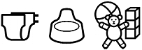

Makaton signing for babies is a fun and easy way to learn to sign with your baby.
Signing while speaking has been shown to encourage the development of communication and language skills. It can help reduce frustrations and help you to understand your baby’s needs and wants.
Makaton signing for babies is provided as a series of sessions for you and your baby. Together you will learn up to 100 signs and symbols and have fun practising them in songs, games and activities.
Participants receive a pocket book of signs and symbols covering the vocabulary learned in the course, and approximately 30 other concepts that parents of young children often request.
Why not have a go and enjoy the benefits of signing with your baby.Six sessions.
Recommended for parents, family members, carers or members of professional teams who would like to sign with babies and children in their care and have no previous experience of Makaton.